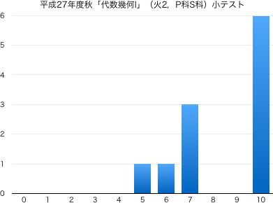
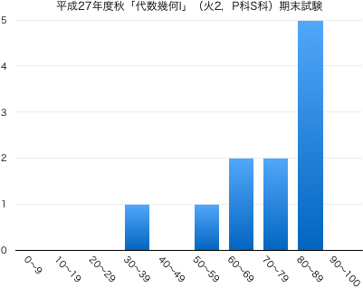

連絡事項
授業の目的
ベクトルや行列を扱う線形代数学は抽象的であるがゆえに、その概念や技法は、数学はもちろんのこと、工学のさまざまな分野でも応用されている。線形代数学の考え方を身につけるために、基本的概念である行列・行列式について学習する。行列や行列式の計算に習熟するとともに、連立1次方程式の解に関する理論も習得する。
達成目標
- 行列の定義を理解し、基本的な演算ができる。
- 連立1次方程式を行列で表し、掃き出し法を用いて解を求めることができる。
- 行列の階数を求め、それを利用して連立1次方程式の問題を解くことができる。
- 逆行列の定義を理解し、掃き出し法を用いて求めることができる。
- サラスの方法を用いて、2次・3次の行列式を求めることができる。
- クラメルの公式を用いて、連立1次方程式の解を求めることができる。
- 逆行列と行列式の関係を説明することができる。
科目の位置づけ
-
この科目では、線形代数学の導入として、行列や行列式について学習する。また、後続科目である「代数幾何Ⅱ」では、行列式の性質を利用した計算技法や固有値・固有ベクトルを取り扱う。
- 「代数幾何Ⅱ」と併せて履修することにより、線形代数学の基礎知識を習得することができる。
- 代数幾何I → 代数幾何II
これまでの授業と今後の予定
| 第1回 |
9月 |
29日（火） |
ガイダンス「なぜ行列の数学を学ぶのか」 |
| 第2回 |
10月 |
6日（火） |
行列 第4章 §1.1 ，行列の和と実数倍 第4章 §1.2 |
| 第3回 |
|
13日（火） |
行列の積 第4章 §1.3 |
| 第4回 |
|
20日（火） |
正方行列，転置行列 第4章 §1.2(p.111-113), 1.4 |
|
|
23日（金） |
（特別研修日） |
|
|
27日（火） |
（休講） |
| 第5回 |
11月 |
10日（火） |
逆行列，正則行列 第4章 §2.2(p.128-132) |
| 第6回 |
|
17日（火） |
連立1次方程式と行列（掃き出し法） 第4章 §2.1 |
| 第7回 |
|
24日（火） |
連立1次方程式の解の幾何学的解釈 |
| 第8回 |
12月 |
1日（火） |
非同次連立1次方程式（解が無数にある場合） |
| 第9回 |
|
8日（火） |
行列の階数，連立1次方程式の解の存在性と自由度 |
| 第10回 |
|
9日（水） |
（補講）小テスト（6限, 2-273教室）（問題 | 解答 | 得点分布） |
|
|
10日（木） |
（補講）小テスト（6限, 2-273教室） |
| 第11回 |
|
15日（火） |
同次連立1次方程式 |
| 第12回 |
|
22日（火） |
逆行列と掃き出し法 第4章 §2.2(p.132, 133) |
|
|
23日（水） |
（補講日） |
| 第13回 |
1月 |
12日（火） |
2次・3次の行列式 第3章 §1.1 ，クラメルの公式 第3章 §3.1 |
| 第14回 |
|
19日（火） |
逆行列と行列式 第4章 §2.2 (p.133-136) |
|
|
26日（火） |
期末試験（問題 | 解答 | 得点分布） （3限 12:40--13:40） |
教科書・参考文献について
- 矢野健太郎・石原繁編 『線形代数』 裳華房 » リンク
- 矢野健太郎・石原繁編『問題集 線形代数』裳華房 » リンク
評価について
- 期末試験80%，小テスト・演習課題など20%の割合で評価する．
- 毎回の授業で問題演習を実施する．
- 教科書等の問題を指定し，指定の答案用紙に解答して提出してもらいます．
- 解答後は必ず答え合わせをして，正しくない場合は途中式のどこが間違えているか探して訂正してもらいます（正答をただ書き写すことではない）．
- 授業時間内に終わらない場合は，次回の授業の前々日（ただし土日を除く）の17:00までに私に直接手渡すか，研究室のドアの封筒に提出してもらいます．提出期限が過ぎた答案は一切受け取りません．
- 1回の提出につき1点を加点します（合計点数は最大10点）．
ただし，不完全な答案（解答されていない問題がある，答え合わせをしていない，誤答が正されていない，等々の不備）は加点しません．
- 中間期に小テストを実施する（10点）．
- 期末試験を実施する（100点満点）．
- $\min\{10,$(課題提出回数)$\times 1\}+$(中間小テストの点数)$+$(期末試験の点数)$\times 0.8\geqq 60$ で合格とする．
その他
- 授業の欠席について
- 出席点というものがないので，休んだことの届け出は基本的にしなくて結構です．友人にノートを写させてもらうなどの対処を各自行ってください（課題の有無も確認してください）．
- 休んだ回の課題を提出する意思があるならば，メール等で連絡の上，答案用紙を受け取りに来てください（またはここからダウンロードして印刷）．レポート用紙やルーズリーフでの提出は原則不可です．
- 病欠等で数日休んでしまった場合は，課題の提出期限を猶予します．その際は，答案用紙を受け取る際に欠席届け等を見せてください．
- スチューデントアワー (SH) は月火水木の昼休みです．
- 授業に対する基本的な考え方に目を通しておいてください．
試験の得点分布と評価など
- 小テスト：問題と解答（平均点 8.36点）

- 期末試験：問題と解答（平均点 71.5点）
|  |
| 履修者 | 11 |
| 受験者 | 11 |
| AA | 0 |
| A | 6 |
| B | 1 |
| C | 3 |
| D | 1 |
| 未受験 | 0 |
| 単位修得者 | 10 |
| 単位修得率 | 90.9% |
|